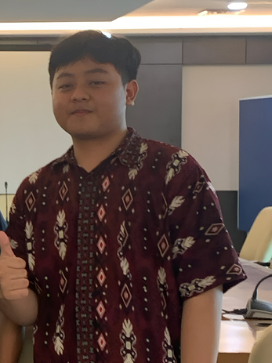

Halo saya Ra'uf Khoirul Hajjam
Seorang pelajar yang antusias di bidang teknologi, jaringan komputer, dan desain web. Saya senang mengeksplorasi hal baru serta menciptakan sesuatu yang bermanfaat dan inspiratif. Saya memiliki rasa ingin tahu yang tinggi terhadap dunia teknologi dan desain digital. Berpengalaman dalam mengelola jaringan Mikrotik dan membuat situs web interaktif, saya percaya bahwa teknologi adalah sarana untuk memberdayakan manusia dan memperluas potensi kreatif. Keahlian saya ada pada bidang Jaringan Mikrotik dan Web Design